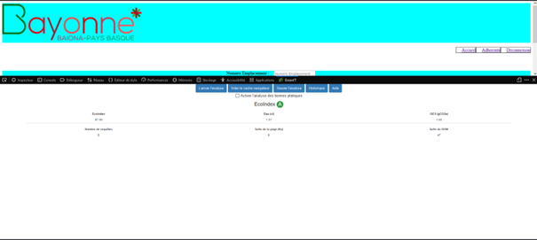
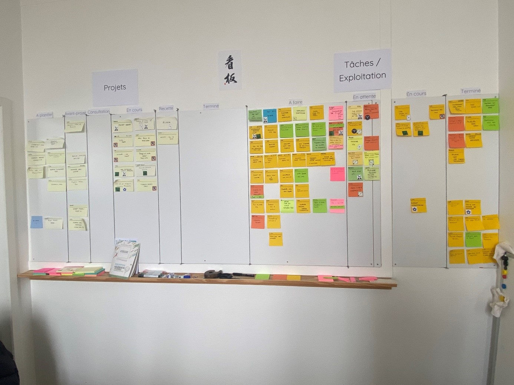
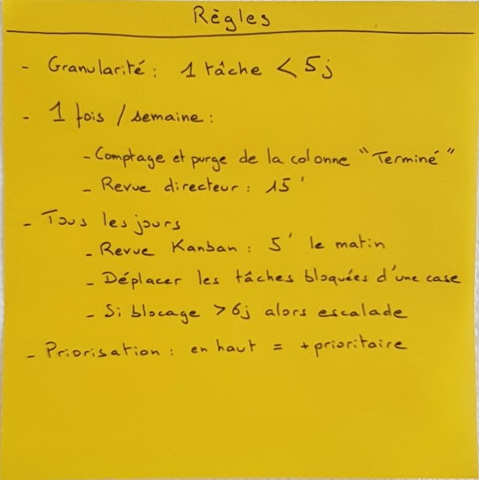
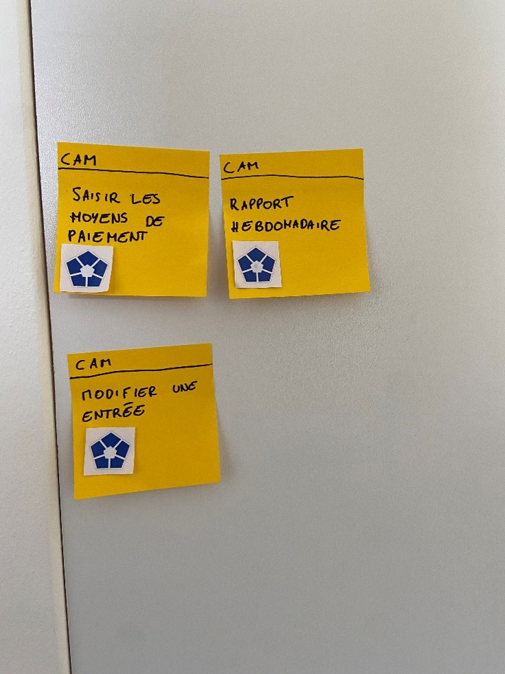
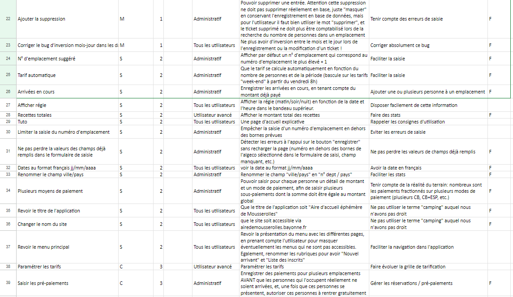

STAGE 2
Ce projet consiste à changer la base de données excel où étaient saisis les arrivants pour le camping mousserolles qui se passe pendant les fêtes de Bayonne.
Mise en commun avec le tableau de synthese
Gérer le patrimoine informatique
on a en tant que ressources numériques : un product backlog.
une norme devait etre respecté concernant le site web. L’éco conception consiste à limiter l'impact des sites Internet.
L'objectif est de concevoir des sites moins énergivores, et donc plus
respectueux de l'environnement, sans pour autant négliger leurs
performances. C’est-à-dire, réduire le code, favoriser un design épuré.
Puis à l’aide d’une extension on peut voir la note d’éco.Mais il y a aussi le respect des données personnelles

Lors de mon stage deux statut se distingue.Il y a les utilisateur ceux qui travaille que pendant l'evenement et puis les administrateurs ceux qui travaillent pour la mairie qui regarde les comptes, le total...
Répondre aux incidents et aux demandes d’assistance et d’évolution
Pour la collecte, le suivi et l'orientation des demandes,Chaque semaine j'avais une sprint review avec les personnes concernés par le site web.
La sprint review est une réunion cruciale dans la méthodologie Agile, où l'équipe de développement présente le travail accompli lors du sprint aux parties prenantes et aux clients. L'objectif principal de la sprint review est de recueillir les commentaires, de discuter des résultats obtenus et de valider les fonctionnalités livrées. C'est l'occasion pour les parties prenantes de s'impliquer activement dans le processus de développement et de prendre des décisions éclairées pour l'itération suivante. La sprint review favorise la transparence, la collaboration et l'adaptation continue, contribuant ainsi à la réussite du projet.
A chaque fin de sprint review, des demandes par rapport au site web etaient ajouter. je rajoutais le tout dans mon product backlog
Travailler en mode projet
Tout au long de mon stage j'ai travaillé avec la methode Kanban.
la méthode Kanban est une méthode de projet dite agile.
Kanban repose sur quatre principes logiques :
• Réduire les coûts de production
• Eviter la surproduction
• Diminuer les délais
• Produire avec la meilleure qualité possible
la méthode Kanban propose un système déclenché par la demande du client. Il s'agit donc de produire un produit demandé dans la quantité demandée, lorsqu’il est demandé.
Mais Kanban est surtout l’une des méthodes agiles les plus adaptées quand il n’y a pas un produit à livrer mais plutôt un flux d’activité et de tâches à effectuer
Un des principes de la méthode Kanban réside dans sa visualisation. En effet, il s’agit d’observer en temps réel tout ce qui peut se passer au sein de l’entreprise. De même, cette méthode flexible laisse la possibilité à l'équipe de d’arrêter ou de suspendre une tâche ou un projet en cours à tout moment si un problème ou une urgence survient. Sa flexibilité est une de ses forces.

On peut remarquer que le tableau est divisé en deux parties. La partie gauche concerne les projets tandis que la partie droite se concentre sur les tâches. Chaque partie est elle-même divisée en plusieurs colonnes.
Pour la partie projet :
• A planifier : ici sont répertoriés tous les projets prévus qu’il va falloir planifier
• Avant-projet : avant de commencer un projet, il est nécessaire d’en définir le périmètre, les acteurs, le budget, et le planning prévisionnel. Une fois ces éléments rassemblés, une validation de la Direction Générale est nécessaire avant d’entamer réellement le projet
• Consultation : le code de la commande publique impose différentes étapes pour garantir la bonne utilisation des deniers publics : rédaction des cahiers de charges, appel à la concurrence, analyse des offres, etc. Cette colonne est donc un passage obligé des projets importants
• En cours : tout simplement les projets en cours sur lesquels les agents du pôle Études et Projets Métier travaillent, éventuellement épaulés par d’autres pôles en fonction des tâches
• Recette : étape nécessaire pour vérifier que les livrables sont conformes au cahier des charges, et de manière générale que le fonctionnement est satisfaisant avant la mise en production
• Terminé : les projets terminés depuis le 1er janvier
Pour la partie tâches/exploitation :
• A faire : les tâches prévues qu’il faudra prochainement réaliser
• En attente : concept intéressant ici, car les agents de la DSI ne sont pas forcément “actifs” sur toutes les tâches. Certaines tâches ne peuvent être poursuivies que si des conditions externes sont remplies. La colonne permet également de suivre la durée d’une tâche pour la relancer au bout d’un moment (défini à 6 jours par le pôle EPM).
• En cours : logiquement, ce sont les tâches en cours de réalisation par un ou plusieurs agents. Tout l’intérêt de la méthode Kanban est de limiter le nombre de tâches en cours, afin de terminer une tâche avant d'en commencer une autre, et d’être ainsi plus efficace. On parle de “tirer le flux", chaque libération d'une place dans une colonne permet de “tirer" un post-it de la colonne précédente
• Terminé : les tâches terminées depuis le début de la semaine
Les règles ne sont pas obligatoires si on adopte la méthode Kanban. C’est à l’entreprise de fixer ses propres règles. Je rappelle que la méthode est flexible et permet donc cela.

Tout d’abord, on voit qu’une tâche ne doit pas dépasser les 5 jours. Si c’est le cas, c’est que l’agent l’a mal anticipée. Pour les tâches présumées longues, il est préférable de les diviser en plusieurs sous-tâches. Cela permet de clarifier ce qu’il y a à faire, mais aussi d’avoir la sensation d’avancer plutôt que d’attendre plus de 5 jours pour avoir finalisé quelque chose.
Aussi, plusieurs choses sont prévues une fois par semaine.
• Comptage et purge de la colonne « Terminé » : tous les lundi matin, on compte les tâches qui ont été réalisées la semaine passée. Les résultats sont stockés dans un fichier. Le but n’est pas de compter quel agent a fait quoi ou combien de tâches, mais de voir la capacité de travail du pôle dans son ensemble, afin d’améliorer la capacité de la DSI à planifier ses futurs projets.
• Revue directeur : c’est seulement Karine Dupuy qui fait le point avec le responsable de la DSI pour lui montrer comment les projets avancent
Quotidiennement, plusieurs actions sont aussi réalisées :
• Revue Kanban : le matin vers 9h on regarde ce qu’on prévoit de faire pendant la journée, qui va faire quoi, etc.
• Déplacer les tâches bloquées d’une case : cela fait lien avec les tâches mises dans la colonne « En attente », on les avance seulement d’une case
• Si blocage > 6 jours alors escalade : si le cas précédent dépasse les 6 jours, la tâche devient prioritaire ou alors est remise dans « à faire »
Pour finir, voici à quoi peuvent ressembler des tâches :

Toute ses taches placés sur ce tableau sont tirés du product backlog
Le product backlog est une liste dynamique et priorisée des fonctionnalités, des améliorations et des tâches à réaliser dans un projet de développement logiciel ou de produit. Il sert de référence centrale pour l'équipe de développement en leur fournissant une vision claire des éléments à livrer. Le product backlog est continuellement ajusté et affiné tout au long du projet, en fonction des retours des utilisateurs, des exigences changeantes et des priorités définies par le product owner. Il joue un rôle essentiel dans la planification et la gestion de projet Agile, en permettant une collaboration efficace entre les parties prenantes et en assurant la livraison de la valeur maximale au client.
Voici mon product backlog :

a l'aide du product backlog, j'ai aussi defini les taches les plus importantes au moins important grace à MoSCoW

Mettre à disposition des utilisateurs un service informatique
Le but de mon stage etait de deployer un service. J'ai donc deployé un site web servant d'application pour favoriser la rapidité et l'efficacité lors de l'enregistrement pour un emplacement de tante
Organiser son développement professionnel
Lors de mon stage, j'ai eu l'opportunité de nombreuses choses, notamment l'utilisation de l'AJAX (Asynchronous JavaScript and XML) et de JavaScript. Ces deux technologies ont grandement enrichi mes compétences en développement web et m'ont permis d'améliorer l'expérience utilisateur de mes projets.
L'AJAX est une technique de développement web qui permet de mettre à jour dynamiquement une page sans avoir à la recharger complètement. Grâce à l'AJAX, j'ai pu créer des interfaces interactives et réactives, en permettant aux utilisateurs d'effectuer des actions sans interruption ou rafraîchissement de la page. Cela a rendu mes applications plus fluides et plus conviviales.
Quant à JavaScript, c'est un langage de programmation de script côté client qui a le pouvoir d'ajouter de l'interactivité et de la dynamique aux sites web. J'ai pu exploiter les fonctionnalités de JavaScript pour manipuler le contenu HTML, créer des effets visuels, valider des formulaires, interagir avec les utilisateurs et bien plus encore. JavaScript m'a offert un large éventail de possibilités pour rendre mes applications web plus interactives et engageantes.
Au cours de mon stage, j'ai pu mettre en pratique mes connaissances en AJAX et JavaScript. J'ai réalisé des fonctionnalités telles que la récupération de contenu dynamique à partir d'une base de données et la validation de formulaires en temps réel. Ces expériences m'ont permis d'approfondir ma compréhension de ces technologies et d'améliorer mes compétences en développement web.